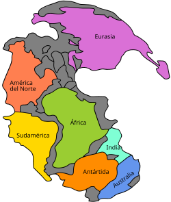
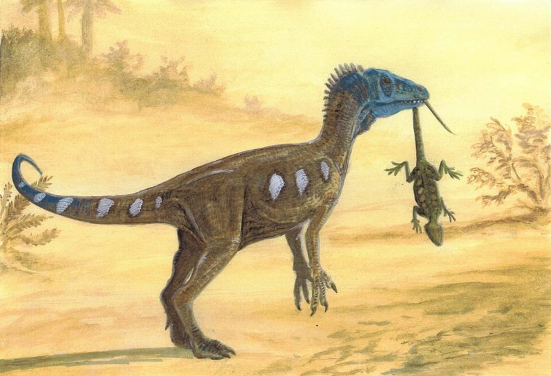

El Triásico (Primer periodo)
Geografía y Clima
El mundo se conformaba por el supercontinente Pangea que se extendia de polo a polo. Rodeado por un mar llamado Panthalassa, aunque tambien tenia un mar interior llamado Tetis
Vida Terrestre
Marco el inicio de los grandes animales sobre el planeta
Arcosaurio
 Se convirtieron en los depredadores y herbívoros dominantes, desplazando gradualmente a los terápsidos. Aunque todavia no era un dinosaurio como tal
Se convirtieron en los depredadores y herbívoros dominantes, desplazando gradualmente a los terápsidos. Aunque todavia no era un dinosaurio como tal
Primeros Dinosaurios
Eoraptor Herrerasaurus Coelophysis

Flora
redominaban las coníferas, cícadas y helechos. Al no haber flores aún, el paisaje era mayormente verde y marrón

Vida Marina
Los océanos se repoblaron con los primeros corales modernos e ictiosaurios

(Animales que poco a poco se parecen a los delfines)
Extinción masiva del Triásico-Jurásico
Habitualmente cada etapa de la prehistoria termina con una gran extinción, esta daria inicio al Jurásico y acabo con el Triásico

Causa
Fue provocado por una actividad volcanica masiva vinculada a la ruptura del super continente Pangea. Esto libero grandes cantidades de CO2 provocando un cambio climatico severo

Consecuencia
Debido al cambio del clima, al C02 en la atmosfera y a la poca capacidad de adaptacion de los seres vivos en ese momento, termino extinguiendose alrededor del 80% de las especies que habitaban el planeta, los dinosaurios al quedarse sin competidores empezaron su reinado en el planeta

El Jurásico (Segundo Periodo)
Geografía y Clima
División de PangeaEl supercontinente continuó fragmentándose en dos grandes masas: Laurasia al norte y Gondwana al sur, separadas por el mar de Tetis
Galería de la Prehistoria

Pinturas Rupestres: Las primeras expresiones artísticas en cuevas.
Herramientas: Hachas de mano y puntas de flecha talladas.
Megalitismo: Construcciones con grandes bloques de piedra.